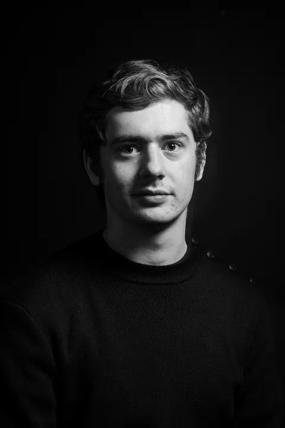

Concert
Concert Sinfonia Garonna
- Lieu
- Toulouse

Répétition aux bougies — Sinfonia Garonna, 2026
Photographies de concert
En scène.
Photographies de concert
Chœurs et orchestres, à Toulouse et Castres.

J’ai chanté dix ans en chorale et joué trois ans du cor d’harmonie. Je connais le déroulé d’un concert : les moments où l’on peut bouger, et ceux où il faut se faire oublier.
Pas de flash, un déclencheur silencieux : ni le public ni les musiciens ne m’entendent.
J’ai photographié Sinfonia Garonna à Toulouse, en concert et en répétition, et le Chœur Unum à Castres.